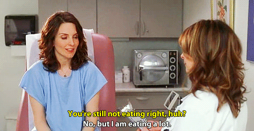

My Journey Into Development
How I learned to say "Fuck You"
Created by Hannah Bottalla / @hannahb0t
Who Am I?
Timeline
Early years
AOL
College - Part 1
College - Part 2
After College - Part 1
my first "big girl" jobAfter College - Part 2
The impostor syndrome, sometimes called impostor phenomenon or fraud syndrome, is a psychological phenomenon in which people are unable to internalize their accomplishments. Despite external evidence of their competence, those with the syndrome remain convinced that they are frauds and do not deserve the success they have achieved. Proof of success is dismissed as luck, timing, or as a result of deceiving others into thinking they are more intelligent and competent than they believe themselves to be.
Learn to say “Fuck You” to the world once in a while. You have every right to. Just stop thinking, worrying, looking over your shoulder, wondering, doubting, fearing, hurting, hoping for some easy way out, struggling, gasping, confusing, itching, scratching, mumbling, bumbling, grumbling, humbling, stumbling, rumbling, rambling, gambling, tumbling, scumbling, scrambling, hitching, hatching, bitching, moaning, groaning, honing, boning, horse-shitting, hair-splitting, nit-picking, piss-trickling, nose-sticking, ass-gouging, eyeball-poking, finger-pointing, alleyway-sneaking, long waiting, small stepping, evil-eyeing, back-scratching, searching, perching, besmirching, grinding grinding grinding away at yourself.Stop it and just DO. Don’t worry about cool. Make your own uncool. Make your own, your own world.
Sol LeWitt’s admonition to Eva HesseJan 14, 2014
I have been thinking a lot about my feelings of inadequacy. I have learned to say "fuck you", and now I feel much better. #hatersgonnahate
Takeaways
Give yourself a #warriorname

Find a mentor

Believe in your potential
Celebrate your success
(no matter how small)Share and support others
THE END
THANK YOU RAILSGIRLS!
hannahbottalla@gmail.com
Twitter: hannahb0t